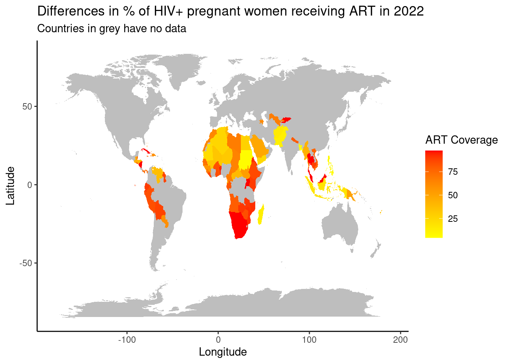
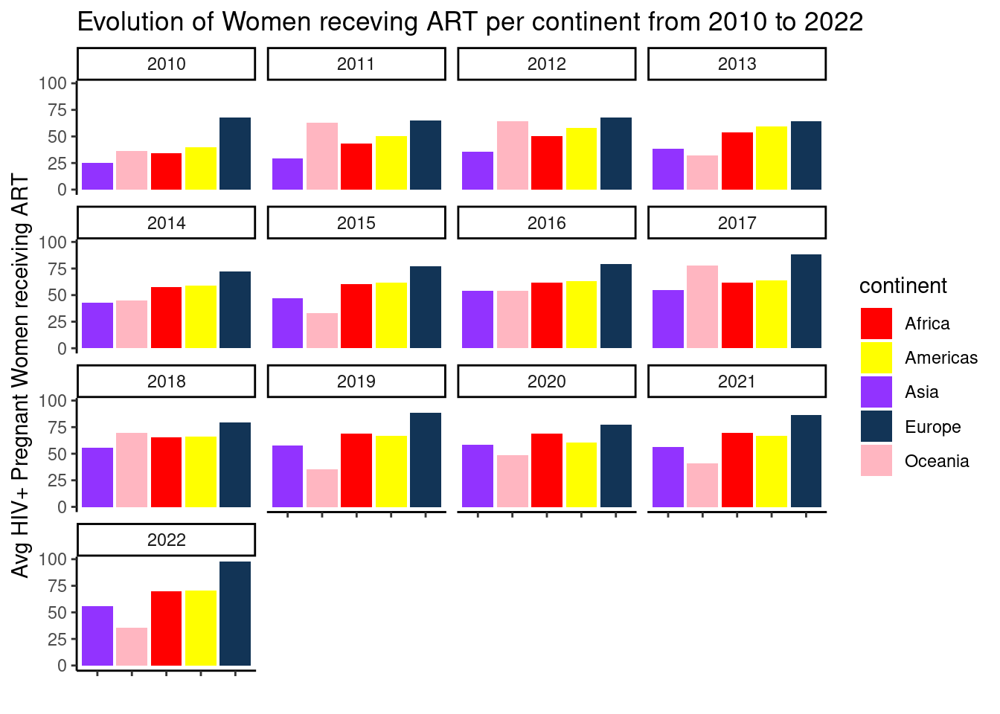

flowchart LR A[Map Analysis] --> B(Time-Series) --> C(Scatter Plot) --> D(Bar Chart)
Exploration of the % of HIV+ Pregnant receving lifelong ART
By Graham O Brien

Introduction
In this Quarto file, we embark on a journey to delve into the complexities surrounding the percentage of HIV+ pregnant women who receive Lifelong ART. We navigate through layers of data, seeking to understand the multifaceted factors that shape access to care and impact health outcomes for vulnerable populations. The data comes from all over the globe poorer countries across Africa, Asia and South America. ART is the treatment for people who are HIV+. Access to ART during pregnancy significantly reduces the risk of mother-to-child transmission of HIV, improving the health and well-being of both mothers and their infants.
More information about the data can be found here https://data.unicef.org/indicator-profile/
a rough guide to the visualisations can be seen below
A Global Persepctive: 2022

Unveiling Progress: A Decade of Insights from 2010 to 2022
[1] "LC_CTYPE=C;LC_NUMERIC=C;LC_TIME=C;LC_COLLATE=C;LC_MONETARY=C;LC_MESSAGES=C.UTF-8;LC_PAPER=C.UTF-8;LC_NAME=C;LC_ADDRESS=C;LC_TELEPHONE=C;LC_MEASUREMENT=C.UTF-8;LC_IDENTIFICATION=C"Watch, as the story unfolds further through a time-series analysis. Follow the line as the progression of Lifelong ART coverage for pregnant women living with HIV is unveiled, revealing the impact of interventions and policy changes from 2010 all the way up to 2022, and everything in between. From humble beginnings to remarkable strides, each data point narrates a chapter of progress in the fight against HIV. Hover over a line to highlight a specific country. Each continent has been given its own specific color
Exploring Relationships: ART Coverage, Fertility Rate, and Life Expectancy
- The scatter plot containts three data points
- Life expectancy
- fertility rate
- ART coverage
Amidst the data lies a scatterplot, where individual stories merge into a collective narrative. Here, the correlation between life expectancy and ART coverage is laid bare. Through this lens, and with the help of a trendline in black, pattern and disparities can be uncovered. The meniscule upward trend suggests that ART coverage of pregnant has a small effect on the life expectancy of women overall. Use the two filters on the right, to view the data for a certain year or country. Hover over a data point, to highlight all the data from this continent.
Continental Contrasts: Analyzing ART Coverage Across the Globe

Conclusion
In Conclusion, this Quarto file vividly illustrates the progress that has been made in providing lifelong ART coverage to pregnant women with HIV. Through the use of visulaisations, we can see the effect that ART coverage has on pregnant women and the different variables that it affects. Whilst progress has been made, we can still see the disparities across different regions and the need for targeted interventions in these areas.